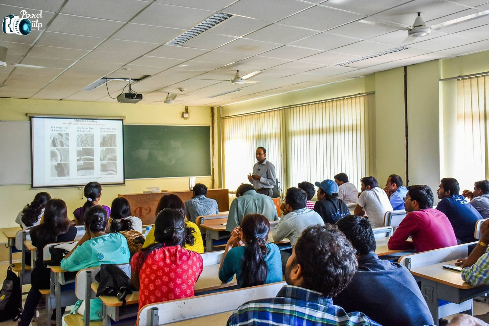
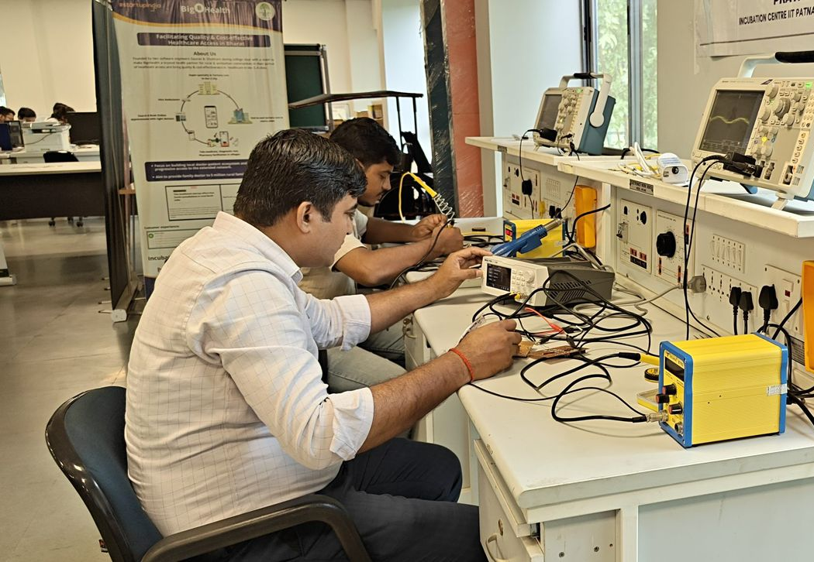
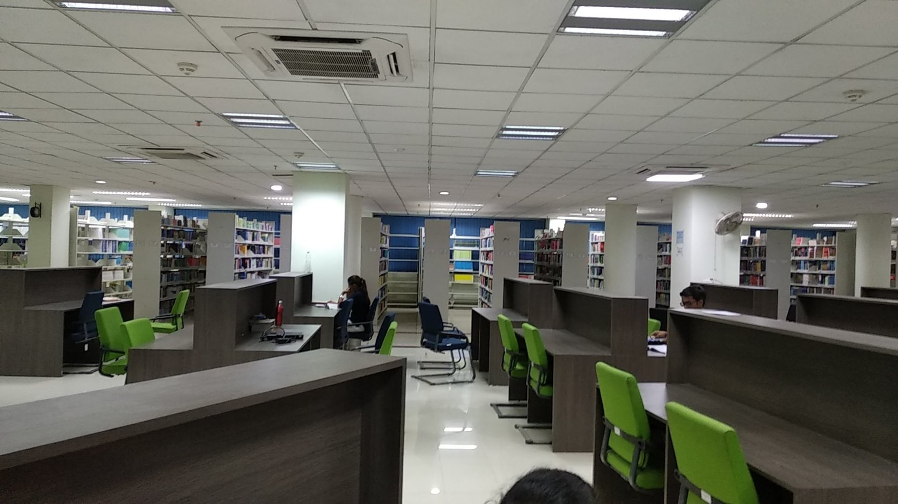
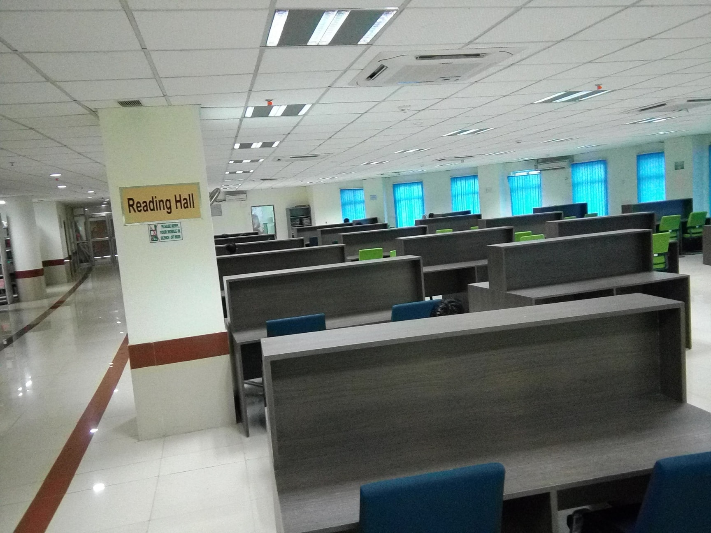
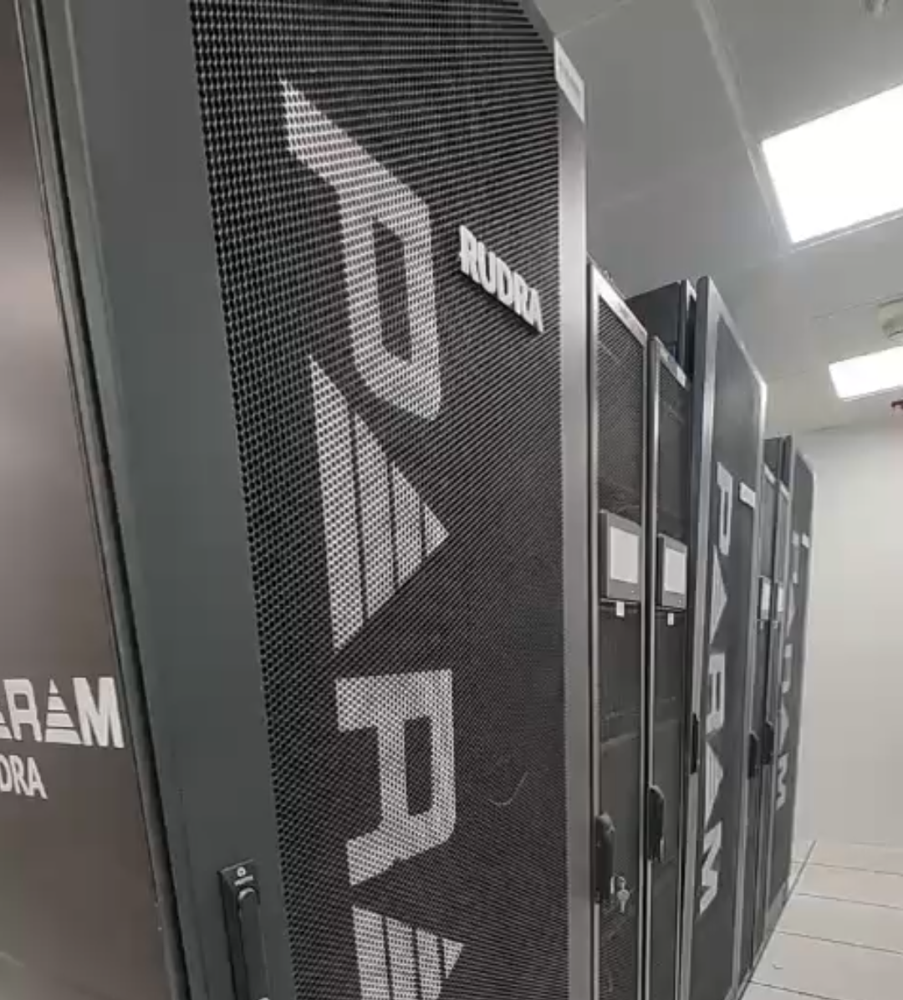

Department of Computer Science and Engineering
The Department of Computer Science and Engineering offers full-time degree programs designed to maintain a judicious balance between theoretical foundations and applied software design:
The 8-semester B.Tech programme equips students with profound mathematical grounding, discrete structures, hardware organization, and high-performance software engineering.

| Semester | Core Course Modules | Laboratory Sessions |
|---|---|---|
| Semester 1 & 2 | Engineering Mathematics, Introduction to Computing, Physics, Digital Electronics | Computer Programming Lab, Basic Electronics Lab |
| Semester 3 | CS201 Data Structures, CS204 Discrete Mathematics, CS202 Digital Systems Design | Data Structures Lab, Hardware Design Lab |
| Semester 4 | CS203 Computer Organization & Architecture, CS205 Algorithms, Probability & Statistics | Algorithms Implementation Lab, Assembly Lab |
| Semester 5 | CS301 Operating Systems, CS302 Database Management Systems, Theory of Computation | Operating Systems Lab, DBMS Lab |
| Semester 6 | CS303 Computer Networks, CS304 Compiler Design, Department Elective I | Computer Networks Lab, Compilers Lab |
| Semester 7 | Department Elective II, Open Elective I, HSS Elective, B.Tech Project Phase-I | Capstone Project Lab |
| Semester 8 | Department Elective III, Open Elective II, B.Tech Project Phase-II | Project Evaluation & Defense |
The 2-year M.Tech program admits candidates through GATE score and personal interview. It is engineered to train specialists for high-end research and development roles in leading IT multinational corporations, government defense labs, and doctoral studies.
The Ph.D. programme at IIT Patna is dedicated to advancing the state-of-the-art in fundamental and applied computer science. Doctoral candidates work alongside faculty mentors on sponsored research problems funded by DST, MeitY, ISRO, DRDO, and global tech consortiums.

Key academic courses offered across undergraduate and postgraduate programmes:
| Course Code | Course Title | L-T-P-C | Level | Category |
|---|---|---|---|---|
| CS101 | Introduction to Computing and Problem Solving | 3-0-2-4 | Undergraduate | Institute Core |
| CS201 | Data Structures and Algorithms | 3-1-2-5 | Undergraduate | Program Core |
| CS204 | Discrete Mathematics and Graph Theory | 3-1-0-4 | Undergraduate | Program Core |
| CS301 | Operating Systems Principles and Design | 3-0-2-4 | Undergraduate | Program Core |
| CS302 | Database Management Systems (DBMS) | 3-0-2-4 | Undergraduate | Program Core |
| CS303 | Computer Networks & Internet Protocols | 3-0-2-4 | Undergraduate | Program Core |
| CS401 | Artificial Intelligence & Heuristic Search | 3-0-0-3 | UG / PG | Elective |
| CS501 | Advanced Algorithms & Complexity | 3-0-0-3 | Postgraduate / Ph.D. | PG Core |
| CS541 | Machine Learning & Pattern Classification | 3-0-2-4 | Postgraduate / Ph.D. | Elective |
| CS562 | Cyber Security & Network Defense | 3-0-0-3 | Postgraduate / Ph.D. | Elective |
| CS601 | Cloud Computing & Distributed Consensus | 3-0-2-4 | Postgraduate / Ph.D. | Elective |
| CS701 | Natural Language Processing & Large Language Models | 3-0-0-3 | Doctoral / PG | Elective |
Students enjoy 24/7 access to high-speed internet terminals, digital library catalogs, and dedicated quiet study floors:


